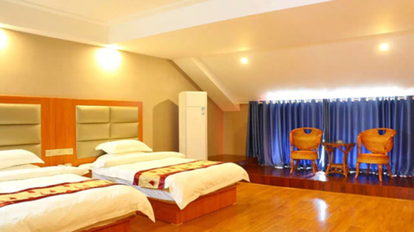
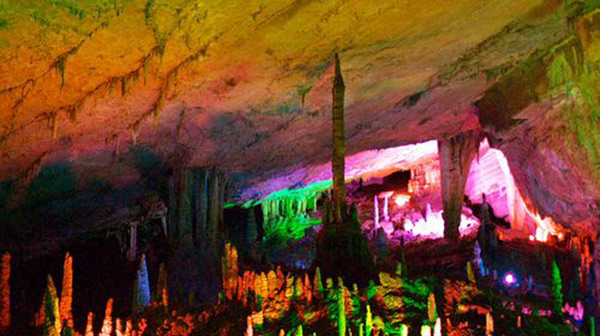

还记得I see you的阿凡达吗？记得岩石漂浮的哈利路亚山吗？看我的骄傲脸，这个暑假不必舍近求远，远渡重洋到国外玩，直接飞到湖南张家界一圆影迷的梦吧。想就出发，就这么简单。上图是航拍全景图哦~下面一起开始张家界“最”之旅吧。
交通：
厦门-长沙 ：飞机1个半小时，可选择航空：厦航；山航等；廉价航空：奥凯，西部航空；（选择往返组合大概在1000左右，比单程分开买便宜）
长沙-张家界：可选火车或汽车。
住宿：
张家界有不少度假酒店和客栈民宿，按自己需求来；我选择的是下面这家，上网预订430元/起含早，性价比超高，推荐给大家。
张家界最大的森林度假酒店，醉氧最佳之地
——张家界碧桂园凤凰酒店
必须承认在选酒店方面，除了价格因素，我是个颜控。以至于当第一眼看见张家界碧桂园凤凰酒店这么华丽丽，宛如欧洲皇室的大厅时，鼠标就情不自禁点下单预订了。
没想到的是到了之后，随手拍都和酒店宣传照一样美爆了。因为抵达当天下雨，没有立即安排行程，先在西餐吧点了下午茶，席间和酒店人员聊了几句才知这是模仿文艺复兴时代西斯廷拱廊，专门聘请艺术家手工绘制而成。
不得不感叹碧桂园的用心，复刻技艺十分精湛。与其说这是度假酒店，不如说是隐匿在森林间的宫殿。特别是夜幕降临华灯初上之时，璀璨如星。
我选的是山景房，一进屋就有一大盆欢迎水果很有居家感。值得一提的是晚上还有服务员送茶点和牛奶，还会给你手写一封欢迎信件，祝你度假愉快。在星级服务上绝对可圈可点。

吃：张家界最大西餐厅
占地2600平方米西餐厅，霸气侧漏，怎么拍都只能是一角，就可见一斑了。整个餐厅和外面大厅长廊一样，采用欧陆式装修风格，可同时容纳600人用餐
这是我点的下午茶黑森林蛋糕。外形不错，里面用料更是正点，有很多果肉在里面。每一口都入口即化，绵甜在舌尖。吃甜品的幸福感顿时油然而生，吃货真的很容易满足。友情提示：预订房间送的自助早餐也是在这里用餐哦。你也可以在这里吃西式晚餐自助，有烤牛排羊排等按你的要求现场烹调。
再来说说酒店的凤凰轩中餐厅。装修和西餐厅一样奢华，但这里更多的是中国风元素。
无论是大红灯笼，窗格镂空元素的背椅，温馨而充满亲和力。对于不太吃辣的却在湖南旅游的朋友来说，凤凰轩绝对会让你心满意足。
因为这里不仅有湖南特色湘菜，还有粤式菜肴。比如说我最爱的煲汤。当我承受不了湘菜的鲜香热辣之时，来一口老火慢煨清甜降火的汤汁，这种感觉简直完美。
玩：五花八门一应俱全
首先，酒店有可以看山的室外泳池，有带滑梯的儿童泳池，还有保持室温的室内泳池。每一种人群都能找到适合自己玩水的地方。
其次，真心让人有错觉是到了玩乐城。不仅有适合全家老少玩的桌上足球，还有各种电子游戏机，赛车，CS等。还有投篮，桌球，甚至连射箭都有。还配有专业教练可以现场辅导。这应该是目前我见过娱乐项目最多的酒店了。必须推荐下，这么给力。
带年龄小的小朋友，家长也不用愁，这里还有铺了软地毯的亲子室。各种小朋友喜欢的游戏设施这里也都有哦。
而喜欢安静的朋友，可以到瑜伽教室对镜练习，还有健身球可以辅助锻炼身型。
另外还有专门的阅览室为您提供服务。作为最大的森林度假酒店，张家界碧桂园酒店配套设施真的很全面。然而这还不是最绝的，精彩还在后面。
酒店还有《幻?凤凰》剧场大型魔术变脸SHOW。真的不要太赞好吗？没想到可以在度假行程中，有机会这么近距离看大变活人的戏码。
还有轻松诙谐的小丑表演，拉观众小朋友现场互动。
浪漫情景的魔术，如梦似幻。
以及国粹精华川剧变脸的嗨爆全场。而这样精彩纷呈的剧场离酒店房间的距离只有一部电梯！感觉如果雨一直下，天天窝在酒店也不会闷。突然明白为什么国外游客经常到一个地方，不像国人那样急急忙忙赶路走马观花，而是放慢脚步好好享受了。有的时候，我们把酒店当做住宿的地方，却忽略了它还有很多功能，比如休闲，放松身心。
以后有机会，我想带全家人来住这里的度假别墅，相对于酒店客房而言，群山环绕的度假别墅隐私性更高，自由度和活动空间更大，吸氧也更近哦。
酒店地址：张家界武陵源区永定区沙堤乡板坪村 ，近武陵源
友情提醒：可以使用酒店收费的叫车服务，酒店配备的司机素质很高服务好。（接我的途中见到路上有车抛锚，司机会主动征询我的意见下车帮忙推车，赞一个。而且路上会详细解答我对景区的问题，给我规划游玩路线）

中国最美的旅游溶洞
——黄龙洞
现在全国好多地方高温不降，这时候溶洞就是避暑胜地。而张家界的黄龙洞更是洞中极品。洞内常年保持在16度，所以就像天然的冰箱一样凉爽。这是入口的水车，还有很精致的小亭子，是表示时来运转么？个人很喜欢。（友情提示：请做好防水保暖工作）
黄龙洞现已探明的洞底总面积10万平方米，全长7.5公里，垂直高度140米。所以千万不要低估它，这个没有2个多小时是走不完哒。简直是别有洞天，里面楼梯盘旋，地形复杂。好在景点都有配免费的讲解员，一定要跟紧不要擅自离队。不然很可能绕弯路找不到北哦。
洞体共分四层，整个洞内洞中有洞，洞中有河，石笋、石柱、石钟乳各种洞穴奇观琳琅满目，美不胜收。
据专家考证大约3.8亿年前，黄龙洞地区是一片汪洋大海。真的很难想象地球发生了什么？只能感叹大自然的鬼斧神工造就了眼前的奇景。
有人说这里是地下的魔宫，里面的景点也很有神话故事色彩。比如：定海神针，花果山，龙宫大厅，天柱街……充满想象力，却名副其实。
个人强烈推荐体验下坐船游览。这个含在门票内，不需要另外收费，相当值得。因为分旱洞和水洞。洞内有一个水库、两条阴河、三条地下瀑布、四个水潭、十三个大厅、九十六条游廊。
这是坐船拍摄的照片，当船在水中行，周围的景色随之灵动起来。这时你才能感受到黄龙洞作为世界溶洞的“全能冠军”的真正魅力。
地址：张家界市武陵源区索溪峪镇河口村，门票：80元/人
张家界最经典景点
——天子山
说最经典景点，可能有人不服。这里流传一句话："谁人识得天子面，归来不看天下山。”凡到过天子山的人，对这些评价都是赞同的。天子山景观奇特，惊险万端。峰高、峰大、峰多，是它的一大特色。
天子山索道
要想尽览天子山这“扩大的盆景，缩小的仙境”的迷人景色，搭乘天子山索道无疑是最佳和最正确的打开方式。
特别是早上云雾缭绕的时候乘坐，穿梭其间有种腾云驾雾的感觉。门票：72元/人
天下第一桥：仙人桥
仙人桥坐落在猴子坡上、天子峰下的王爷洞对面。之所以被称作“天下第一桥”因为整个桥是自然形成，长26米，宽1.5米，厚一米多，高约六七十米，飞架在两岸悬崖绝壁之上，鬼斧神工，惟妙惟肖，古人云：“天地可掬，此真天造也”。
摄影家与画家们倾倒的最佳风景点之一
——御笔峰
国内外30多家画刊报纸曾展露过它的芳容。 她位于天子山天子阁西侧的山谷中。感觉阳光太强的时候凸显不出它的美，云雾缭绕之时的意境才是最佳。